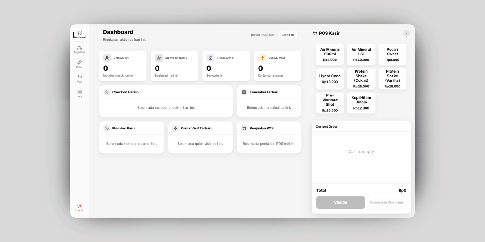
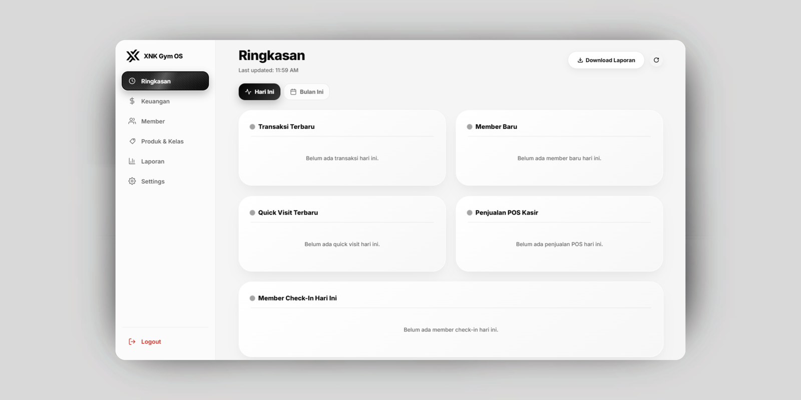
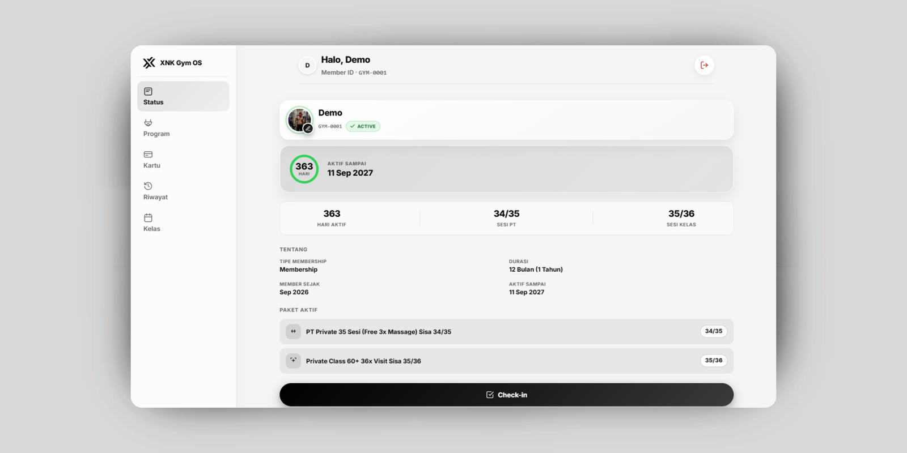

XNK Gym OS
XNK Gym OS menggabungkan manajemen membership, pembayaran, check-in, PT, kelas, POS, monitoring staf, laporan, dan layanan mandiri member dalam satu sistem terintegrasi.
Dibangun untuk operasional gym yang nyata. Dirancang mengikuti alur kerja Anda.

Fitur
Kelola registrasi baru, perpanjangan, quick visit, diskon, dan pembayaran dari satu alur kerja.
Satu form, satu alur -- dari member baru sampai pembayaran selesai.
Status membership dan paket setiap member terorganisir otomatis, tanpa dicek manual satu per satu.
Sisa sesi dan tanggal kadaluarsa terpantau otomatis untuk setiap member.
Jual produk dan add-on ritel tanpa keluar dari sistem manajemen gym Anda.
Akses data member, check-in, riwayat, dan status membership dalam hitungan detik.
Check-in QR, pencarian, dan riwayat member -- semua dari satu layar.
Pantau kehadiran staf dan kelola akses berdasarkan akun dan role masing-masing.
Sistem mendukung role Owner, Manager/SPV, dan Admin.
Kehadiran dan shift staf tercatat otomatis per akun.
Ringkasan harian dan bulanan tanpa perlu direkap manual satu per satu.

Dashboard Owner
Sistem sudah menyediakan ringkasan admin real-time dan dashboard owner mencakup revenue, membership, produk/kelas, kehadiran, revenue sesi, dan laporan monitoring.
Member Area
Member bisa mengakses informasi mereka sendiri tanpa perlu bantuan admin untuk setiap hal kecil. Member Area yang sudah berjalan mendukung login nomor HP, status membership, kartu member digital, dan program latihan.

Otomatisasi
Integrasi
Demo
Rasakan sendiri sistemnya dan lihat bagaimana XNK Gym OS masuk ke alur kerja gym yang sebenarnya.
Data demo -- bebas dieksplor, jangan dijadikan acuan data gym asli.
Tanpa PDF. Tanpa penjelasan panjang. Langsung coba sistemnya.
Cara Kerja
01
Kami identifikasi bagaimana gym Anda saat ini menangani member, pembayaran, PT, kelas, kehadiran, dan laporan.
02
Sistem disesuaikan dengan alur kerja dan kebutuhan bisnis Anda -- bukan sistem yang sama persis untuk semua gym.
03
Tim Anda mendapat satu sistem terpusat untuk operasional dan manajemen sehari-hari.
Kenapa XNK Gym OS
Tidak semua gym beroperasi dengan cara yang sama.
Semua data operasional tersimpan di satu tempat.
Lihat revenue, member, kehadiran, produk, dan performa.
Member punya akses langsung ke informasi mereka sendiri.
Rekam Jejak
Beberapa situs dan sistem digital yang sudah ditangani XNK Production -- tidak semuanya sistem manajemen gym.
Custom
Gym Anda mungkin punya alur kerja yang tidak cocok dengan paket software standar. Di situlah custom development berperan.
Diskusikan Sistem Anda →Berhenti mengelola operasional lewat tools yang tercecer dan catatan manual. Bangun sistem yang mengikuti cara gym Anda benar-benar berjalan.